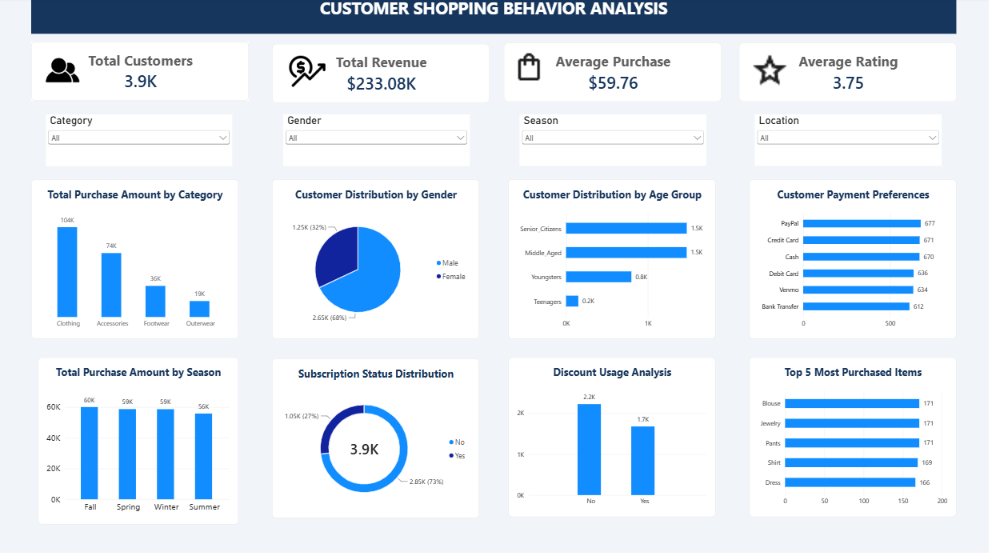

Project Overview
Developed a data analysis project to explore customer shopping behavior, purchasing patterns, and sales trends. Used Python and MySQL for data analysis and Power BI to create an interactive dashboard for visualizing customer preferences and shopping insights.
Problem Statement
Understanding customer shopping behavior is important for identifying purchasing trends, customer preferences, and product performance. This project focuses on analyzing shopping data to uncover meaningful insights that support better business decisions.
Project Objectives
- Analyze customer purchasing patterns and shopping trends.
- Understand customer preferences across product categories.
- Explore sales performance and customer behavior.
- Identify meaningful patterns through data analysis.
- Present insights using interactive Power BI visualizations.
Key Features
- Data cleaning and preprocessing using Python.
- Exploratory Data Analysis (EDA).
- SQL queries for data analysis and insights.
- Customer purchasing trend analysis.
- Product category and sales performance analysis.
- Interactive Power BI dashboard with visualizations.
Data Analysis
Used customer shopping records to perform data analysis and identify purchasing patterns and trends.
- Cleaned and prepared the dataset using Python.
- Performed exploratory data analysis to understand the data.
- Used MySQL queries to analyze customer shopping records.
- Explored customer preferences and product category trends.
- Created visualizations to communicate analytical findings.
Technologies Used
My Contribution
- Performed data cleaning and preprocessing using Python.
- Analyzed customer shopping data using SQL queries.
- Explored purchasing patterns and customer preferences.
- Developed an interactive Power BI dashboard.
- Designed visualizations to present key business insights.
Dashboard Preview
The interactive Power BI dashboard provides visual insights into customer shopping behavior, purchasing patterns, and sales performance.

Project Outcome
Successfully developed an interactive dashboard to analyze customer shopping behavior and visualize purchasing trends. The project demonstrates the use of Python, SQL, Excel, and Power BI in transforming raw shopping data into meaningful business insights.